In this tutorial we are going to cover such things as Fog, Fire, and Smoke. Some of the really cool special effects that set Unreal apart from other FPS games.
Everyone wants fire in their map at some point. Here is how it's done. There are actually several ways to make and several types of fire. We are going to concentrate on the two easiest to get you started. The first is a TorchFlame and the second is a simple masked texture fire.
TorchFlameToo easy...gimme something harder..oh, alright..here's a simple torch: Make a standard 256 x 512 x 512 room. Pick some pretty textures and subtract the room. Now, we need somewhere to place the flame, so build a 64 x 64 x 64 box in the room. Texture it as you see fit. In the Browser go to Classes, Light and select TorchFlame. You are probably way ahead of me, but right click the top of the box we made and Add a TorchFlame actor. Center it on top of the box. Rebuild. You can adjust the light properties of the TorchFlame Actor just like any other light.
Since the 220 build, the TorchFlames are much bigger than they used to be. You can adjust the size of the TorchFlame by right clicking it to bring up it's properties and under Display setting the DrawScale. I usually use .5 myself. One is normal size, .5 half, etc...
Note: This does not affect the light out put, just the size of the flames.
You can make other types of fire using masked sheets. Load the GreatFire.utx texture pack and look at some of the different flames. We are going to use these textures.
First let's build something for the flame to sit on. In the same room make a square 32 x 128 x 128. Texture it and add it to the world. Now select a nice fire texture from GreatFire.utx like AncFlame1. Open the Sheet properties, click X-Wall and make it 128 x 128. Position the sheet on top of and in the center of the little box we just added. Click Add Special and go to Masked Wall. Click 2-sided! Now add the The special brush, and you should have a flame atop your little dais. Click the flame and open the texture properties and set Unlit. Add a PlayerStart and then rebuild. Run the map. The flame looks ok on there but when you look at it from the side, you can tell it's a flat sheet! Take your red brush and rotate it 90 degrees so it forms an X with the first sheet and add another flame sheet like the first one (making sure to make it Unlit).
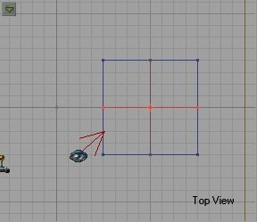 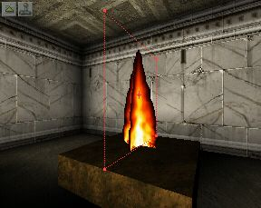Now rebuild and run it again. Ah...better.
Note: To me this type of making a flame looks much less real than just adding a TorchFlame, plus it doesn't give off any light of it's own. I usually only use sheet fire in recesses in the wall where they are only visible from one side, or in other "special" situations.
Let's build another sheet flame that looks better. Build a niche in one wall 128 x 128 x 32. Align it in the center of the wall, a few units off the floor and subtract it.
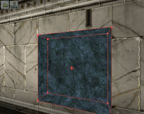Now select a fire texture like AncHot. Add a sheet (just like we did before) in the center of the niche.
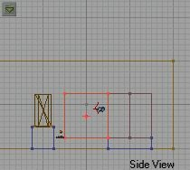Make sure the texture on the flame sheet is unlit. now add alight in front of the flame and give it a reddish color.
We can also add a grate in front of the fire. load the NailCast.utx textures. Go to Mask and select one that 128 x 128. using the same sheet brush we just added the last flame with, move it to the edge of the niche where we added the flame. Leave all the properties the same and Add Special. You should now have a masked grate in front of the flame.
Note: This grate will not block anything (gunfire, players, bots...). If you wanted to block them you could add an Invisible Collision Hull. To do that select the cube brush and make it 126 x 126 x 1. Yes, ONE unit thick. Right click on the GRID and change the grid setting to 2 units. Now move the grate sheet back into the niche one one "snap" or two units. Place the new cube brush at the edge of the niche, but not touching it. Note: We made the "grate" smaller than the opening because if the masked brush (the grate in this case) touches the subtracted wall we will get a HOM or Hall-Of-Mirrors effect there. If you don't know what I am talking about then make the grate the same size as the opening, add it and then run the map.
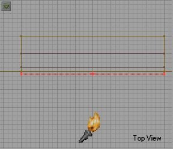Now, under Add Special, choose Invisible Collusion Hull from the drop down menu and add the brush. It should be invisible in the 3d view. If you click the little joystick icon it will appear.
The thing I don't like about collision hulls is that it adds an extra step. If you made the grate out of the 1 unit thick brush you would get the same results. Delete the grate brush and the collision hull. Now move the brush we used for the collision hull where the grate sheet used to me. Select the grate texture and Add Special Masked Wall. Now rebuild the map and run it. Works good, huh? And we eliminated a whole step (adding the grate sheet).
Note: The whole reason you have to either add collision hulls or make the one unit thick brush is because a sheet will NEVER block actors, no matter how you set it. There is a lot of confusion on this issue, but the fact is a SHEET WILL NEVER BLOCK ACTORS!
SmokeWhere there's fire there's smoke...or there should be. To are (as in a lot of cases with UnrealEd) several ways to make smoke. One way it to find a cool smoke texture and add a sheet just as we did with the flames. Another way would be to use the Smoke special effects from the classes menu. Since you make the smoke sheet exactly as you did the flame sheet, I'll show you the Special Effect method.
We'll keep using the same map we have been working on. Let's make a new room and then connect it to the first room. Make a small hallway first, let's say 256 x 256 x 256. Place it in the middle of one of the bare walls, against the floor then subtract it and texture it. Now make your brush 512 x 512 x 512 and add a room on the other side of the hall. Your map should look something like this now.
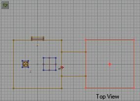 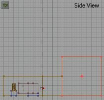We are going to add another TorchFlame in this new room and then add some smoke over the TorchFlame. First go back to the first room and click on the block the TorchFlame is sitting on to highlight it. Now right-click and Copy Polygons To Brush. Click the grid to unhighlight the brush and move the red brush to the center of the new room on the floor, and add it.
Add a TorchFlame to the block as we did before. Remember to resize it so it fits correctly (or you can copy the first torch flame by highlighting and clicking CTRL-W and moving the new TorchFlame into place). Now open the browser, go to Classes, and then Effects. See the two classes titled SmokeHose and SmokeHoseDest? We are going to use those.
The first one, SmokeHose, is where the smoke will generate, and the second SmokeHoseDest is where it is going to. We need to add the SmokeHose just over the flame and the SmokeHoseDest near the ceiling. Go ahead and do that now.
Rebuild and run the map. You should see a little trail of smoke rising up from the flame to the ceiling. Easy, huh? Now, I wouldn't use this on every flame in your level, as I am sure lots of these will slow down the map, but you can use it occasionally to get the desired effect.
You can adjust various settings in the SmokeHose Properties to change things like the size of the smoke puffs, the speed they rise, the variation of the individual puffs, etc . . . Experiment with the settings to see what kind of things you can do with it.
Another way to make smoke is using the SmokeGenerator class under Effects. The only thing about smoke geneartors is that they have to be triggered to work.
Okay, go to the SmokeHose & Dest we added and delete them. Instead, put a SmokeGenerator above the TorchFlame. See that nice puff of smoke? That is where the smoke will enimate from. Clcik it and bring up it's properties. We only need to set a couple things to get it working. One is give it a tag under Events. I used "Smoke1" to keep it simple. Under Smoke Generator, set bRepeating to true. Now add a trigger right by your player start. Set it's event to "Smoke1" Rebuild and run the map.
Tips: You can play with settings under SmokeGeneartor heading like BasePuffSize, RisingVelocity, etc... to get various effects. I usually use SmokeGenerators for regular, rising smoke and normal fire smoke, and use SmokeHose for "special" situations.
FogOne of the most frequently asked questions by a new UnrealEd users is "How do I make fog?" This tutorial will show you how, and give you some tips on how to do it so it looks good.
Like so many things in UnrealEd, fog is made by using a zone. Basically all you need is a zone, a ZoneInfo, and a light. Light is the key. The ZoneInfo tells the game engine "here, there be fog..." and the light "shows" you that fog.
Okay, start by making a small hallway coming of the last room we made. make it 128 x 128 x 256. Now make the brush 128 x 128 x 512 and connect it to the last hallway at a 90 degree angle, making an "L."
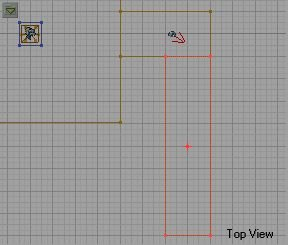Now make a room 512 sq. Add it at the end of the hallway like this:
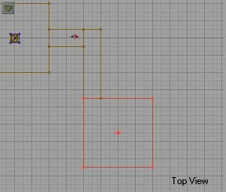Now we need to "zone off" the fog area. To do that make a sheet brush big enough to cover the hallway opening (in this case 128 x 128) and place it in the hall. Place it like below:
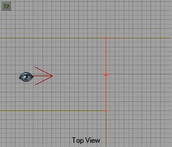 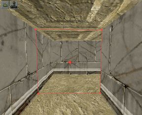Now go to Add Special Brush and from the drop down menu select Zone Portal and then Add Special Brush. Now rebuild and you will see that the light from the last room does cross the Zone Portal normally.
The Zone Portal is invisible and cannot block actors because it is a sheet.
Note: If you change the 3D view to Zone/Portal View (under Mode) you should see that the area on one of side of the ZonePortal is one color and the area on the other side a different color. If this is NOT true, then you have not placed the ZonePortal properly. Delete it and try again.
Tip: The Zone/Portal View is an excellent way to check your zones integrity. you can check ALL zones this way.
Now we have to make the new zone a fog zone. Go to Classes, Info, and add a ZoneInfo somewhere in the last room we made (512 sq). If you expanded the ZoneInfo you didn't see a FogZone did you? There isn't one. Just use the generic ZoneInfo and we will set it to a FogZone.
Highlight the ZoneInfo and open it's properties. Expand ZoneInfo and the second field down should be bFogZone. Set this to, you guessed it, true.
Add a light in the center of the room. Open the LightProperties and expand Lighting. See the three "Volume" settings at the bottom (VolumeBrightness, VolumeFog, VolumeRadius)? These are the setting that make the fog appear. Try setting them all to 32 except VolumeBrightness--leave it at 64. Rebuild and run the map.
You should now have fog in the last room. Try changing the Volume settings under the light Properties and see how it changes the fog.
Note: The reason we built our hallway/Room like we did and place the ZonePortal where we did is because fog is NOT visible from zone to zone. If you have a straight hallway that leads into a fog zone the fog will not be visible until you enter the fog zone, making it suddenly "appear" as you cross the ZonePortal. So try to make your fog zone in an area that is not visible from the previous zone.
More Special Effects will be covered in Part Two of the Special Effects Tutorial.
Play around with these effects and have fun. Try different things and see what looks good and what does and doesn't work. As always, if you have any questions e-mail me.
-Wolf